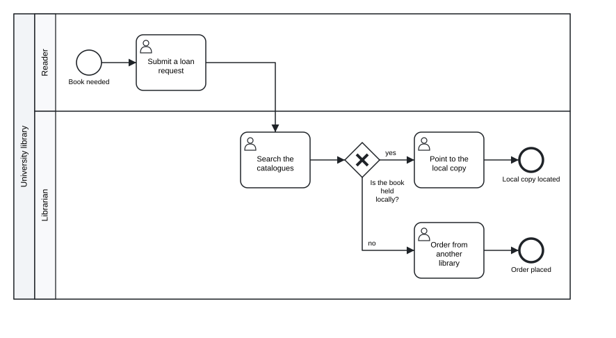

Chapter 1 Models as text
In this chapter you will see what a BPMN file contains and which part of it a tok model keeps · read a tok model line by line · learn the principle that the text is the model and every file is a view of it · weigh what text gives you over a drawing · place tok among other text notations for processes · see how tok rests on the BPMN 2.0.2 metamodel and how tok import brings existing diagrams back to text
1.1 Two layers of a BPMN file
A process diagram drawn in Camunda Modeler, bpmn.io or any other BPMN tool is saved as a .bpmn file. The file is XML in the format defined by the BPMN 2.0.2 specification of the Object Management Group (OMG), and it holds two different kinds of information.
The first layer is the semantics of the model: which participants take part, which processes they run, which events, tasks and gateways each process contains, and how sequence flows and message flows connect them. This is the part a process engine reads, the part a validator checks and the part a reader of the diagram cares about. In the XML it lives in elements such as bpmn:process, bpmn:userTask and bpmn:sequenceFlow.
The second layer is the layout, called diagram interchange (BPMN DI). It records where every shape lies and how large it is, and through which points every arrow runs. In the XML it lives in elements such as bpmndi:BPMNShape with dc:Bounds, and bpmndi:BPMNEdge with di:waypoint. The layout matters to people looking at the picture, but it does not change what the process does: move a task fifty pixels to the right and the process is the same process.
Here is an excerpt of a small BPMN file. The first lines belong to the semantic layer, the last ones to the layout:
<bpmn:process id="library-process" name="Interlibrary loan" isExecutable="false">
<bpmn:startEvent id="need" name="Book needed" />
<bpmn:userTask id="request" name="Submit a loan request" />
<bpmn:sequenceFlow id="f-need-request" sourceRef="need" targetRef="request" />
...
</bpmn:process>
<bpmndi:BPMNDiagram id="BPMNDiagram_1">
<bpmndi:BPMNPlane id="BPMNPlane_1" bpmnElement="collaboration">
<bpmndi:BPMNShape id="request_di" bpmnElement="request">
<dc:Bounds x="176" y="30" width="100" height="80" />
</bpmndi:BPMNShape>
...The whole file of this example has 122 lines. Thirty-six of them describe the process; the other 85 are coordinates. In models drawn by hand the proportion is similar, and the coordinates are what make BPMN files hard to read, hard to compare and hard to write without a graphical editor.
A tok model keeps only the first layer. The same process as tok text:
tok 1.0 "Interlibrary loan"
pool library "University library"
lane reader "Reader"
start need "Book needed"
user request "Submit a loan request"
lane librarian "Librarian"
user catalogues "Search the catalogues"
xor available "Is the book held locally?"
user locate "Point to the local copy"
user order "Order from another library"
end located "Local copy located"
end ordered "Order placed"
flow need -> request -> catalogues -> available
flow available -> locate "yes"
flow available -> order "no"
flow locate -> located
flow order -> ordered
Figure 1.1: The interlibrary loan, drawn by tok svg from the text above.
Download the model (.tok) Download the BPMN export (.bpmn)
The text has 19 lines, two of them empty. There are no coordinates: when a picture or a BPMN file is needed, the tools compute the layout from the structure of the model. Processes are drawn from left to right, pools are stacked one under another, and lanes are rows inside their pool, as most people draw BPMN by hand.
1.2 Reading a model line by line
You can read the model above without knowing the language, because every line follows the same pattern: a keyword that says what the line describes, an identifier that names the element for the tools, a label in quotes that names it for people, and sometimes attributes that add details.
| Line | Meaning | BPMN element |
|---|---|---|
tok 1.0 "Interlibrary loan" |
the header: language version and title of the model | definitions |
pool library "University library" |
a participant whose process is modelled, with the identifier library |
participant and its process |
lane reader "Reader" |
a lane in the pool; the lines indented under it belong to it | lane |
start need "Book needed" |
a start event | startEvent |
user request "Submit a loan request" |
a user task: a person working with a system | userTask |
xor available "Is the book held locally?" |
an exclusive gateway, labelled with a question | exclusiveGateway |
end located "Local copy located" |
an end event | endEvent |
flow need -> request -> catalogues -> available |
three sequence flows written as one chain | three sequenceFlow elements |
flow available -> locate "yes" |
one sequence flow with a label | sequenceFlow with name="yes" |
Three rules are enough to read any tok model:
- Every line starts with a keyword. The keywords are short forms of the names of BPMN elements:
start,end,user,service,xor,and,pool,lane,flow,message. - After the keyword comes the identifier, then the label. The identifier (
catalogues) is used to refer to the element elsewhere in the text, for example in flows; it becomes theidin the BPMN file. The label ("Search the catalogues") is what the diagram shows; it may be in any language and contain any characters. - Indentation means belonging. A lane is indented under its pool, and the elements of a lane are indented under the lane. Flows usually stand at the end, without indentation, because they connect elements across lanes.
The order of the lines is free: a flow may name an element declared further down. By convention, and in the canonical form that tok fmt prints, the elements come first and the flows below them.
1.3 The text is the model
Working with tok follows one principle: the text is the model, and everything else is a view of it. The BPMN file for Camunda Modeler, the SVG picture for a report, the DMN files of the decisions, the forms, the simulation results: each of them is produced from the text by a command, and none of them is edited by hand. When the process changes, you change the text and produce the views again.
model.tok ──► tok check is the model correct? (diagnostics with line numbers)
──► tok fmt the canonical form of the text
──► tok bpmn model.bpmn: BPMN 2.0 XML with diagram layout
──► tok svg model.svg: a picture of the diagram
──► tok export every file an engine needs: BPMN, SVG, DMN, forms
──► tok sim simulation: cycle times, waiting, utilisation, event log
──► tok eval the value of a decision for given inputs| Command | View | Used for |
|---|---|---|
tok check |
a list of diagnostics, each with a line, a code and a message | finding mistakes before anyone else sees them |
tok fmt |
the same text in its one canonical form | stable layout of the text, clean diffs |
tok bpmn |
BPMN 2.0 XML with a computed diagram | Camunda Modeler, bpmn.io, other BPMN tools |
tok svg |
an SVG picture | documents, web pages, slides |
tok export |
the BPMN file, the picture, DMN files, Camunda forms | deployment to Camunda 8 |
tok sim |
indicators and an event log | estimating cycle times and workloads, process mining |
tok eval |
the value of a decision as JSON | testing decision tables and decision models |
Several consequences follow from the principle.
The views are always in step. Because the picture and the BPMN file are produced from the same text by the same engine, they cannot contradict each other or the text. A diagram pasted into a report a month ago may be out of date, but running tok svg again gives the current one.
The layout is not your concern while you model. You never drag shapes or route arrows. The price is that you cannot place an element exactly where you want it; the gain is that adding a task never means rearranging half of the diagram. When a drawing made in another tool must be kept, the tools keep it beside the text in a separate file, as Chapter 8 explains.
The text has one canonical form. tok fmt prints any valid model in exactly one way: two spaces of indentation, one space between words, attributes in a fixed order, flows joined into chains where they form a single path, comments kept where they were. Two people who write the same model and format it get the same text, so differences between versions are differences in the process, not in style.
Layers stay apart. The structure of the process, the decisions, the forms, the details that a process engine needs and the parameters of a simulation are separate statements or separate attributes. A descriptive model never has to mention any of them, and a tool that does not need a layer can ignore it. You add the layers when you need them, as Chapters 9, 10 and 11 show.
1.4 Why text
Graphical editors for BPMN are mature and pleasant to use. Writing models as text is not meant to replace them for every purpose; it brings advantages that a drawing stored as XML does not have.
1.4.1 Version control
A process model is a document that changes: a regulation is amended, a step is automated, a role is moved to another department. Text can be kept in a version control system such as Git next to the procedures it describes, and every change is recorded with its author, date and reason.
The decisive property is the size of the difference between two versions. Suppose the library decides that the reader must be notified after an order to another library. In tok the change is one new line and one changed line:
@@ -9,6 +9,7 @@
xor available "Is the book held locally?"
user locate "Point to the local copy"
user order "Order from another library"
+ user notify "Notify the reader"
end located "Local copy located"
end ordered "Order placed"
@@ -16,4 +17,4 @@
flow available -> locate "yes"
flow available -> order "no"
flow locate -> located
-flow order -> ordered
+flow order -> notify -> orderedThe BPMN files written before and after the change differ in 30 lines, most of them coordinates of shapes that moved to make room for the new task. Nobody reviews such a difference line by line; everybody can review the two lines above.
1.4.2 Review
Because each line describes one element, a model can be reviewed like any other text: in a pull request, in a document with comments, on paper. A reviewer can point to a line (“line 12: this should be a manual task, the librarian does not use the system here”), and the author can find it at once. The diagnostics of tok check use the same line numbers.
1.4.3 Collaboration
Two people can work on the same model at the same time, each on a copy, and combine their changes with the ordinary tools for merging text. When they change different parts of the process, the merge is automatic. When they change the same line, the conflict is a conflict between two lines of text, which a person can resolve by reading them. Merging two XML files with diagram coordinates is, in practice, impossible without a graphical tool.
1.4.4 Agents
A language model working as an agent handles short, regular text well and XML with coordinates poorly. In tok an agent writes the model as text, runs tok check (or calls the check tool of the MCP server), reads diagnostics that name a line and a code, corrects the lines, and never has to produce XML or place shapes. The whole language fits on one page, which tok cheatsheet prints and which can be given to an agent as context. Chapter 14 describes the tools for agents in detail.
1.4.5 Text tools
Finally, text works with every tool that handles text: search across hundreds of models for every task in a given lane, generate models from a spreadsheet of steps, compare a model with the procedure it documents, read it with a screen reader. None of this needs a BPMN editor.
A model that passes tok check without errors is correct BPMN. It is not necessarily a correct description of the real process: whether the steps, roles and decisions are the right ones is the responsibility of whoever models the process, exactly as in a graphical editor.
1.5 tok among other text notations
tok is not the first language that describes processes in text. Three notations are often mentioned in the same breath.
Mermaid is a language for diagrams in documentation, rendered in many wikis and code-hosting platforms. Its flowcharts can look like process diagrams, but they are pictures: Mermaid has no BPMN elements and writes no BPMN file.
PlantUML draws UML diagrams, among them activity diagrams with swimlanes, from text. Like Mermaid, its result is an image. The notation is UML, not BPMN, and there is no BPMN 2.0 model behind the picture.
BPMN Sketch Miner turns a story written as short sentences (“Reader: request the book”) into a BPMN-style diagram. It is designed for sketching a process quickly, for example in a workshop. Its text covers the visible outline of a process, with actors, activities and simple branches, but not the BPMN metamodel as a whole: messages and their flows, data, the kinds of events and their triggers, decisions and execution details are outside its scope.
These tools are good at what they were made for: putting a picture next to a text. tok starts from the other end. Its aim is the model, and the picture is one of its views. A tok document is an exact description of a BPMN 2.0 model, and from it the tools write:
- a standard BPMN 2.0 XML file with diagram interchange, so that Camunda Modeler, bpmn.io and other BPMN tools open it as if it had been drawn in them;
- for executable models, a file that Camunda 8 deploys and runs, together with its decisions and forms;
- DMN 1.5 files for the decisions, which Camunda and other DMN engines evaluate.
The same document is checked against the rules of BPMN 2.0.2, can be simulated, and can be produced from an existing BPMN file by tok import. A Mermaid or PlantUML diagram can be drawn from a description of a process; a tok model can take the place of the BPMN file itself.
1.6 The metamodel underneath
The design of tok follows the metamodel of BPMN 2.0.2, the class model that the OMG specification defines and that every BPMN file instantiates. Every construct of the language corresponds to an element of that metamodel, and every element of a BPMN file that tok understands has exactly one way of being written in tok.
| tok | BPMN 2.0.2 |
|---|---|
the header tok 1.0 "Title" |
definitions with its name |
pool with a block |
participant with its process |
pool without a block |
participant without a process (a black-box pool) |
lane |
lane in the laneSet of the process |
start, end, catch, throw, boundary |
startEvent, endEvent, intermediateCatchEvent, intermediateThrowEvent, boundaryEvent |
task, user, service, manual, script, rule, send, receive, call |
task, userTask, serviceTask, manualTask, scriptTask, businessRuleTask, sendTask, receiveTask, callActivity |
xor, and, or, eventgw, complex |
exclusiveGateway, parallelGateway, inclusiveGateway, eventBasedGateway, complexGateway |
flow |
sequenceFlow |
message |
messageFlow with its message |
message="Name", signal="Name", error="Name" |
message, signal, error declared by name and referenced by event definitions |
decision |
a DMN 1.5 decision with its decision logic |
Identifiers become the id attributes of the XML, which is why they are restricted to ASCII letters, digits, _ and -. Labels become the name attributes. Messages, signals, errors and escalations are declared implicitly: two events that name the same message refer to one message element in the file.
Because the language rests on the metamodel, the checker can apply the rules of the specification. tok check reports, among others, a message flow inside one pool, a default flow on a parallel gateway, or a start event with an incoming flow, each with a stable code; the diagnostics appendix lists every code with its meaning. The checker also knows the conformance classes that the specification defines for process modelling (Descriptive, Analytic, Common Executable and Full) and tells you the smallest class your model fits:
tok check 01-interlibrary-loan.tok --json
{
"file": "01-interlibrary-loan.tok",
"errors": 0,
"bpmn_class": "descriptive",
"diagnostics": []
}The interlibrary loan uses only the elements of the Descriptive class, the visible core of BPMN that every modelling tool supports. Chapter 7 shows how to check a model against a class you choose.
The same holds for decisions. A decision in tok is a DMN 1.5 decision: a decision table, a literal expression in FEEL, a context, a list, a relation or an invocation, with the decision requirements graph that connects decisions to their input data, business knowledge models and knowledge sources. Chapter 9 covers them.
Not every element of the BPMN metamodel has a place in tok. A few rarely used ones (for example imports of external definitions and end points) are outside the language, and the extensions that other vendors write into their files are not kept. When tok import meets such an element, it says so; nothing disappears silently. The conformance appendix lists every element of BPMN 2.0.2 and DMN 1.5 with its tok construct, or the fact that tok does not express it.
1.7 Round trip: from BPMN back to text
Since tok writes BPMN, it can also read it. tok import converts a BPMN 2.0 XML file, whether drawn in Camunda Modeler, in bpmn.io or in another tool, into tok text. Importing the file that tok bpmn wrote for the interlibrary loan gives back the model:
tok import 01-interlibrary-loan.bpmn
tok 0.1 "Interlibrary loan"
pool library "University library"
lane reader "Reader"
start need "Book needed"
user request "Submit a loan request"
...Only the header differs from the original. The import writes the oldest version of the language that expresses everything it read, here 0.1, because the model uses nothing that was added later. A document with that header means the same under every 1.x release, and you may change the header to tok 1.0 if you prefer.
For files written by tok, the round trip is exact: text, then XML, then text again gives the same model, apart from the coordinates of the diagram. Files from other tools keep their structure, names, identifiers and documentation; everything the language cannot express is reported, element by element, on the standard error stream.
The coordinates are not lost either. tok import diagram.bpmn -o model.tok writes, next to the model, a small text file model.tok.layout with the positions of the shapes and the routes of the edges of the original diagram. When you later run tok bpmn or tok svg on the model, the tools draw it as it was drawn, and place only the elements you have added since. The model stays pure text; the drawing travels beside it. Chapter 8 explains the layout file and the details of import, including DMN files.
Import makes tok useful for models that already exist. An organisation with a library of BPMN diagrams can convert them to text, keep them under version control, check them all with one command, and still open them in its usual editor, because the BPMN files are only a command away.
Exercises
Exercise 1.1
- Two layers. Run
tok bpmnon01-interlibrary-loan.tok(or download its BPMN export above) and open the.bpmnfile in a text editor. Find the element that describes the exclusive gatewayavailable, then the shape that places it in the diagram. Which attributes of the shape would change if you moved the gateway in Camunda Modeler? Which element of the semantic layer would change if you renamed it? - Reading a model. Without looking at the diagram, answer from the text: how many end events does the interlibrary loan have, and in which lane is each? Which task does the reader perform? How many sequence flows does the model contain? Then check your answers against the diagram.
- A small change. Add the user task “Notify the reader” between “Order from another library” and the end event “Order placed”, as in the section on version control. Run
tok check, thentok svg, and compare the new picture with the old one. If you keep the model in Git, look atgit diffbefore you commit. - Views. For each of these needs, name the command that produces the right view of a model: (a) a picture for an annual report; (b) a file a colleague can open in Camunda Modeler; (c) the files to deploy to Camunda 8; (d) the average time a case spends waiting; (e) the answer a decision table gives for a given input.
- Other notations. Write the interlibrary loan as a Mermaid flowchart or a PlantUML activity diagram (from their documentation). List three things the tok model expresses that your diagram does not, and say for each who would need it: a reader of the diagram, a BPMN tool, or a process engine.
- Round trip. Draw a small process with three tasks and one exclusive gateway in Camunda Modeler or on bpmn.io and save it as a
.bpmnfile. Import it withtok import diagram.bpmn -o diagram.tok. Compare the text with your drawing: which identifiers did the editor generate, and what did the import report, if anything? Then runtok svg diagram.tokand check that the picture keeps your drawing.